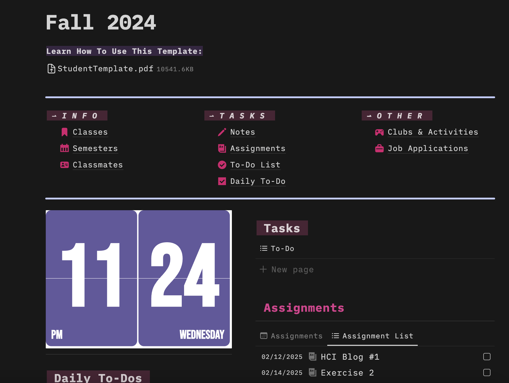
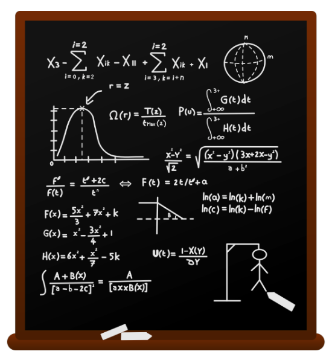

Human Computer Interaction - My Journey Pt. 1
Ashley Ching
February 12, 2025
About Me
Hi! My name is Ashley. I like to sketch and do digital art, which definitely drew me to this area that heavily examines humans reactions and feelings on designs in an applications. I started in computer science just exploring all the topics within to see which ones intrigues me. One aspect that has caught my attention for a while is the design decisions of different applications. I'm sure you've experienced, as I have, many designs that are loved and hated.
Some sites have so much information on their page that can overwhelm users as well as very slow load times that will frustrate users because they just can't load the pages. On the other hand, I've some amazing designs where navigation is clear and easy to use. Plus, everything on the page is engaging and makes people want to continue to explore and use.
This led me to learn more about how humans interact with different platforms as well as the difference between the design idea/process of products that are intuitive to use and ones that feel frustrating to use.
HCI (Human Computer Interaction)
Human computer interaction and UI/UX may sound like words that people in tech may just throw around. In reality, it is very important to understand the nuances of this field because it impacts how we interact technology on a daily basis. It creates a smoother and more welcoming experience that we all tend to take for granted.
A few things I've discovered to have a huge impact on how a person feels about a platform is:
- How easy it is to use for someone who has never explored this technology (example: clear controls, intuitively know where to click)
- How accessible information like being easy to read, easy to navigate throughout
- How designs like buttons, icons, colors, and the layout of the page cohesively looks
 An example of one that has made a positive impact in my life is Notion, a task management application. The clean and clear visual navigation and design helps me stay organized and keep track of my work without making it feel cluttered and disorganized. Its guided customizabiltiy of layouts and creating reminders helps make even a new user comfortable with interacting with it as well as saving time because it has included features that reduce the number of applications needed and cuts out the step of transferring information to a new application.
Smartphones's touch screen is another helpful tool that has saved users time and effort. Its easy motions of swiping and tapping makes it an easy thing to learn no matter how well you know technology. The ability to easily find applications that is arranged in a organized but aesthetic way engages users while making it convenient plays a big factor on why it's so popular nowadays.
Google suites has also made a positive difference in my life. Its collaboration feature made working on projects for classes much easier. Its clear share button plus multiple areas to access collaborative tools allows for users to more easily find and use these features. Its real time editing with collaborators and real-time notifications make working together less stressful.
Human computer interaction has helped me become better because it has allowed me to take a break from the stresses of doing things manually and giving me tools that make it easy for me to do the boring and tedious tasks of my everyday life.
My Project
This semester, my group and I are working on a project to add to HCI knowledge and provide a prototype of an idea that can help students who may feel like more advanced math is very difficult and feel unmotivated to continue learning it.
Some problems that normally kills a student's motivation:
- Don't know how to approach a problem when given one
- Aren't familiar with how to solve problems in a specific area in math.
- Have difficulty recalling formulas or how/when to apply them.
- Wants more practice with solutions available + feedback.
 While there are already many app/websites for younger kids to solve this issue, older students in more advanced classes lack materials and platforms that are interactive and stimulating. Tutoring, textbooks, and videos help, but they often don't provide the engagement needed to sustain the motivation to keep learning even when they cannot figure out a problem.
To combat these issues, we are planning on creating a gamified math application specifically geared towards higher levels of math - Algebra through Calculus.
In this application, users will be able to choose which branches of math and topics they are trying learn or study for. At the beginning, users will have the option to go through a step-by-step guided example of solving that type of problem. Later, users are able to choose how they would like to solve problems and learn this topic.